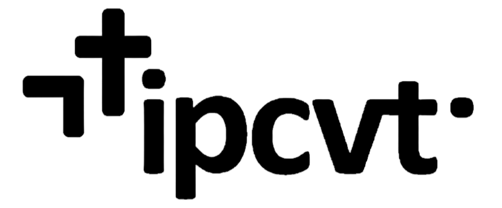

Buscando os eventos da Agenda IPCVT...
Formato frente e verso: folha A4 em paisagem, com o calendário completo na frente e os eventos no verso. Na impressão, escolha frente e verso, virando na borda curta. Se houver eventos demais, páginas extras são adicionadas automaticamente.

Igreja Presbiteriana Central
em Vilar dos Teles
IPCVT • AGENDA ANUAL
Programação da igreja
Um ano de comunhão.
Encontros, celebrações e atividades da nossa comunidade.
2026
Dias com eventos cadastrados
Fonte: Agenda IPCVT · Google Agenda